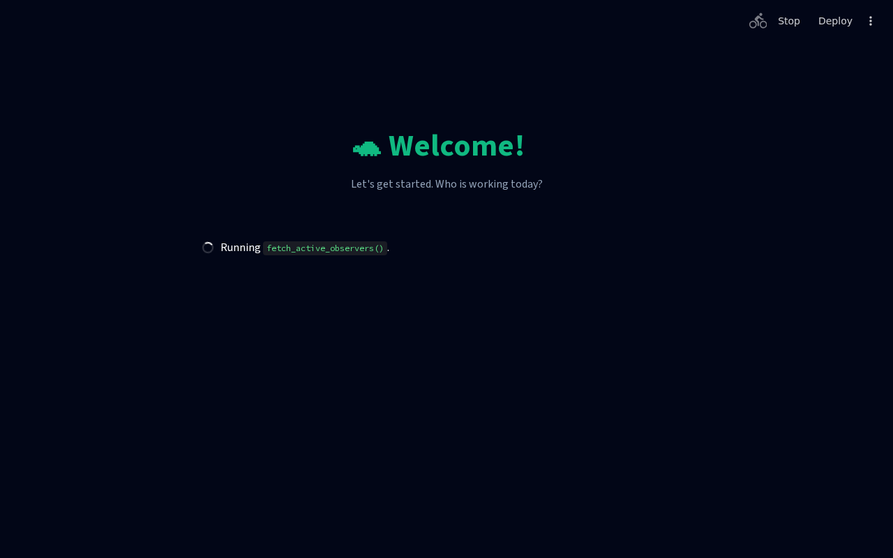
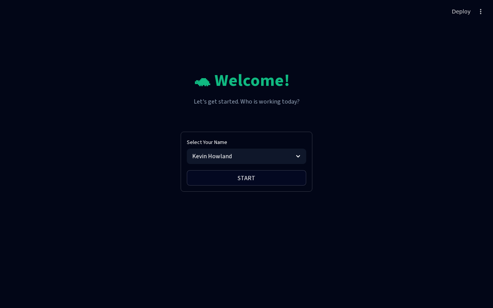

I am reviewing operator manual, and i thought we had change requests
🐢 WINC Clinical Operator Manual (v11.5)
Author: Kevin Howland | Target Audience: Volunteer Clinicians | Level: Beginner
Welcome to the WINC Turtle Incubator Vault!
This manual is your complete, step-by-step guide to using the system. It is designed to be simple, clear, and easy to follow.
📑 Table of Contents
- Chapter 1: Getting Started (Login)
- Chapter 2: The Dashboard
- Chapter 3: New Intake (Establishing a Case)
- Chapter 4: Daily Observations & Biology
- Chapter 5: Reports & Analytics
- Chapter 6: Settings & Disaster Recovery
- Chapter 7: Crisis Workflow (Offline Catch-up)
Chapter 1: Getting Started (Login)
Focus: Signing in securely and understanding shift handovers.
 Figure 1: The Secure Login Interface
Figure 1: The Secure Login Interface
Step-by-Step: How to Sign In
- Open the application.
- You will see the Observer Selector dropdown.
- Click the dropdown and select your name.
- Click the button labeled "START SESSION".
⚠️ The 4-Hour Rule: For security, the system will automatically log you out after 4 hours of inactivity.
Chapter 2: The Dashboard
Focus: Checking the pulse of the incubator room.

Figure 2: The Active Dashboard OverviewWhen you log in, you will land on the Dashboard.
Chapter 3: New Intake (Establishing a Case)
Focus: Bringing a new turtle mother and her eggs into the system.

Figure 3: Establishing a new clinical caseWhen a new turtle arrives, click New Intake on the left menu.
Step-by-Step: Maternal Assessment
- Mother Intake Date: Select the date the mother arrived at the facility.
- Conditions of Intake: Select from LIVING, DOA, DIED IN CARE, or EUTHANIZED.
- Note: If DIED IN CARE or EUTHANIZED is selected, you must enter the "# of Days in Care".
- Carapace Measurement: Type shell length into "Carapace Length (mm)".
- Clinical Mass Gate (Mandatory): Type the weight into "Mass (g)". The system will not let you proceed if the weight is 0.0!
- Click "SAVE".
Chapter 4: Daily Observations & Biology
Focus: Updating egg stages, vitality, and fixing mistakes.
 Figure 4: The Daily Observation grid
Figure 4: The Daily Observation grid
Click Observations on the left menu.
🛑 THE "NEVER ROTATE" MANDATE
CRITICAL RULE: When observing an egg, NEVER ROTATE IT.
🛠️ Correction Mode (Fixing Mistakes)
If you accidentally log an incorrect observation, turn on the "🛠️ Correction Mode" toggle at the top of the screen. This mode highlights previously locked records and allows you to use the "Last-In, First-Out" (LIFO) rollback buttons (often marked as "UNDO LAST ENTRY" or SHIFT END) to safely erase the mistake from the biological ledger without destroying the database history.
Visual Stage Identification
 Stage 1 (S1): Early Identification (Chalking).
Stage 1 (S1): Early Identification (Chalking). Stage 2 (S2): Vascular Development.
Stage 2 (S2): Vascular Development. Stage 3 (S3): Mid-Incubation.
Stage 3 (S3): Mid-Incubation. Stage 4 (S4): Late-Stage.
Stage 4 (S4): Late-Stage. Stage 5 (S5): Pipping Preparation.
Stage 5 (S5): Pipping Preparation.
Chapter 5: Reports & Analytics
Focus: Exporting data for the Lead Scientists.
 Figure 5: The Analytics and Reporting Dashboard
Figure 5: The Analytics and Reporting Dashboard
Click Reports on the left menu.
Chapter 6: Settings & Disaster Recovery
Focus: Advanced tools for Administrators.
Click Settings on the left menu.
 Figure 6: The System Settings and Disaster Recovery tools
Figure 6: The System Settings and Disaster Recovery tools
Bi-Directional JSON Disaster Recovery
- Click "EXPORT FULL BACKUP" first.
- Type
OBLITERATE CURRENT DATA. - Click "RESTORE" or "WIPE & SET CLEAN START".
Chapter 7: Crisis Workflow (Offline Catch-up)
Focus: What to do when the internet goes down.
 Figure 7: Paper Log transcription protocol
Figure 7: Paper Log transcription protocol
If the facility loses power, use paper clipboards to record data.